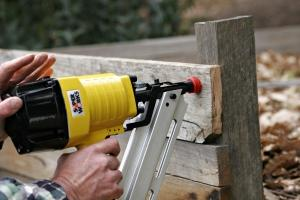
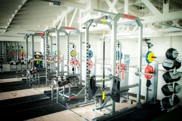
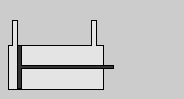

What You Should Know
What Is Pneumatics?
Pneumatics is the use of pressurized air to do work.
Lots of machines and tools use pneumatics to function. In other words, air pressure can be used to power machines so that they can do what they are designed to do.
Pneumatic tools are powerful, fast, and light compared to tools that use other power sources. Builders use them a lot to make jobs easier. Dentists also like pneumatic tools for these reasons.

nail gun
The trigger in a pneumatic nail gun releases pressurized air, which pushes a piston forward to drive the nail into the wood.

gym equipment
Gym equipment uses pneumatics to change the difficulty level. The pneumatic parts do some work or do less work to make the workout easier or harder.
The Power of Pressurized Air
Air wants space to move around. When you squeeze it into a smaller space, it pushes back to make its space bigger. This is air pressure. The more you squeeze it, the more the air pushes back.
Single Acting Cylinder
Air is pushed in on the left and the pressure pushes the piston out to the right. The piston acts as a movable wall that sits in a cylinder. Air cannot move past the piston to escape, but the air can push the piston through the cylinder.

In a pneumatic machine, the piston would be connected to something that would then do work, like a lever or other moving part.
Double Acting Cylinder
Air is pushed in on the left and the pressure pushes the piston out to the right. Then air is pushed in on the right, which pushes the piston back to its starting place.
